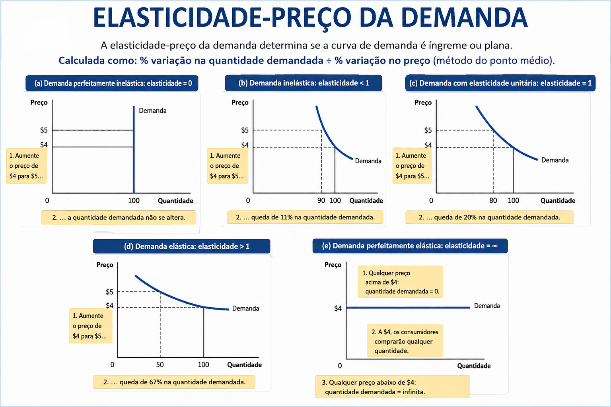
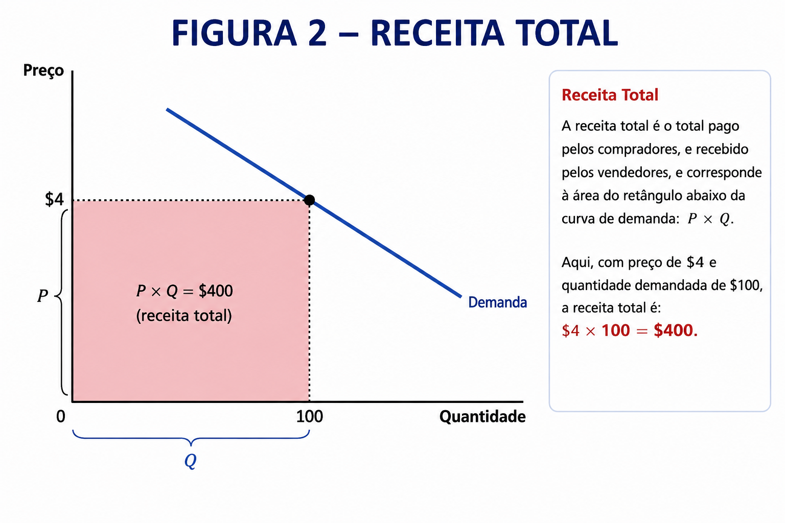
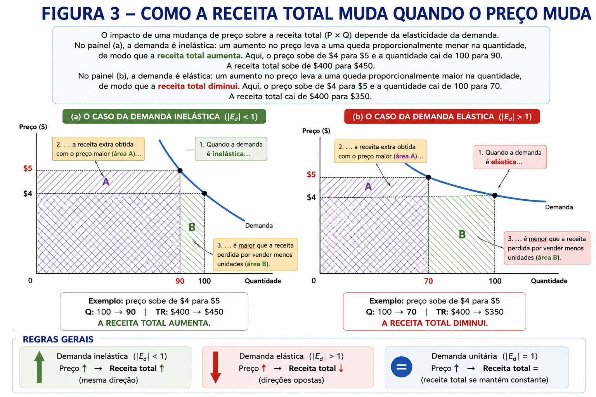
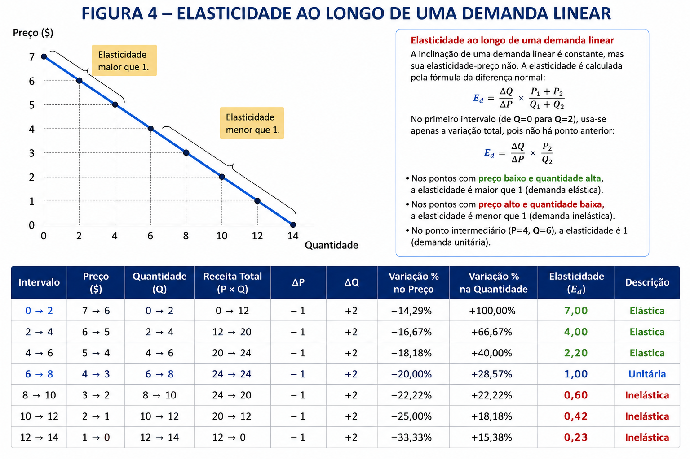
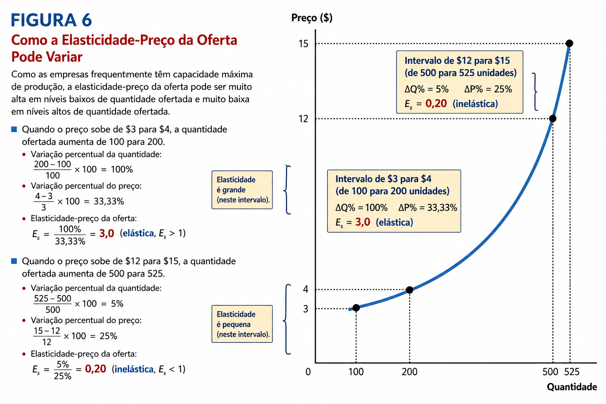
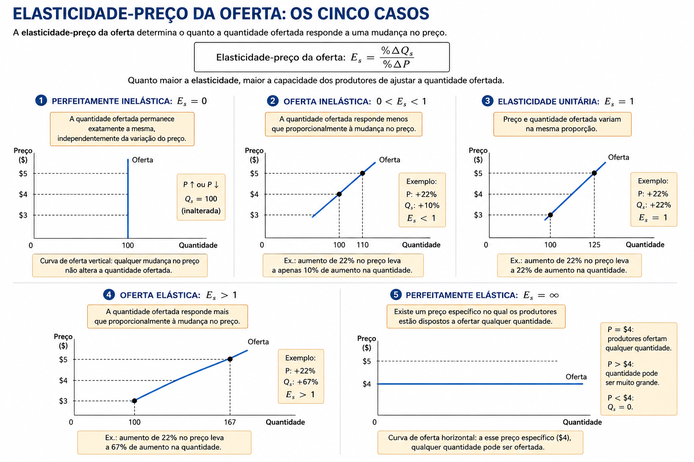
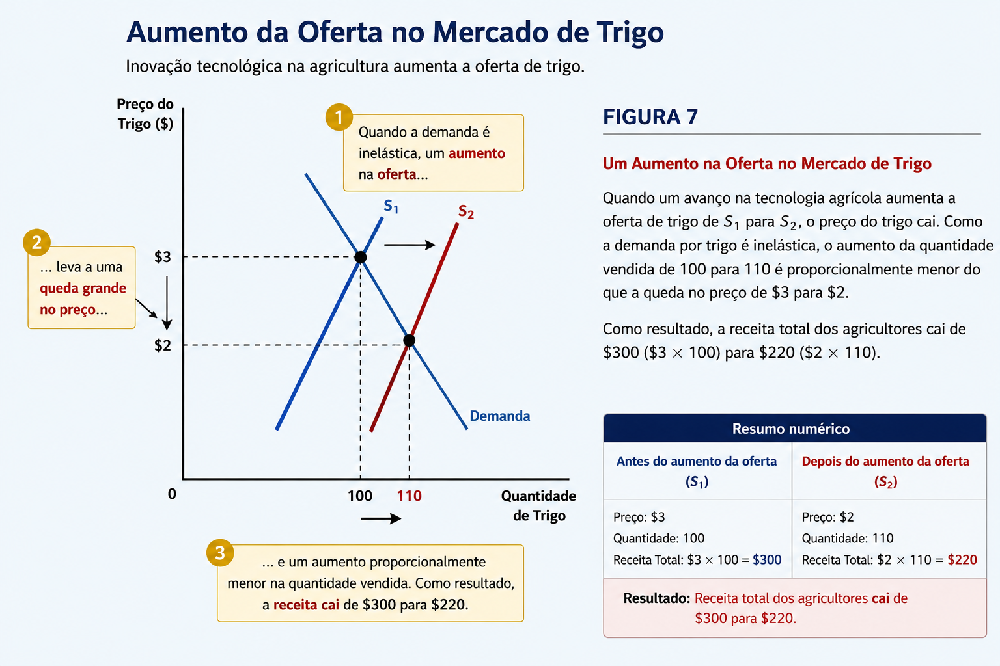
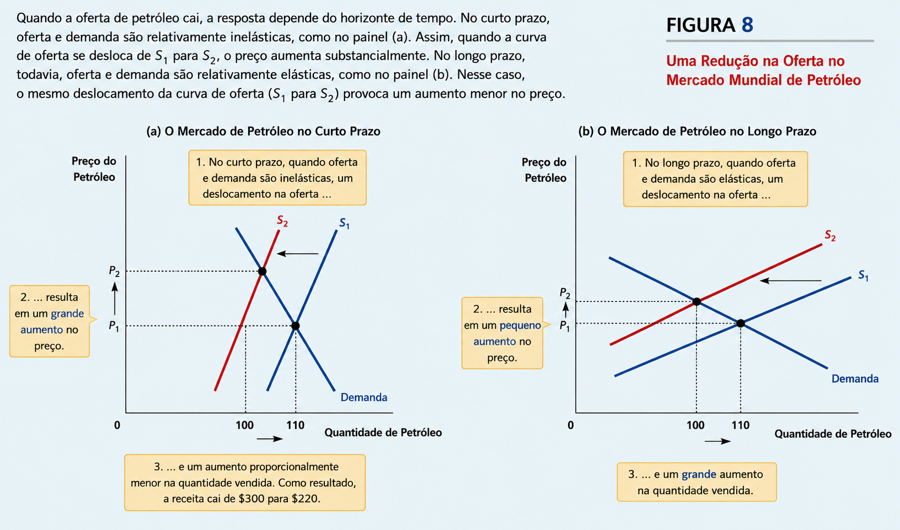
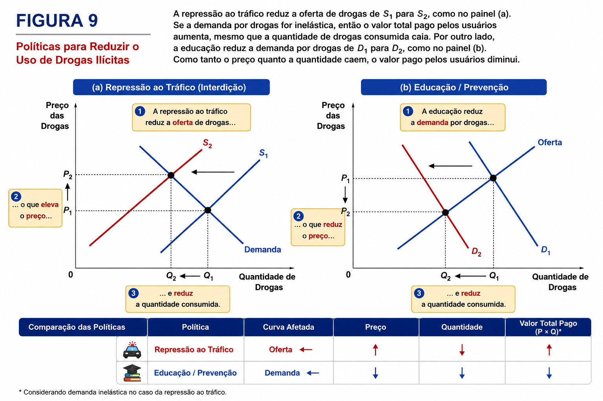

Aula 5 - Elasticidade e suas aplicações
02 — Elasticidade-preço de demanda e seus determinantes
03 — Calculando a elasticidade-preço da demanda
04 — A variedade das curvas de demanda
05 — Elasticidade de demanda e receita total
06 — Elasticidade e receita total ao longo da curva de demanda
07 — Outras elasticidades de demanda
08 — Elasticidade-preço da oferta e seus determinantes
09 — Calculando a elasticidade-preço da oferta
10 — A variedade das curvas de oferta
11 — Podem boas notícias para fazendeiros ser más notícias para fazendeiros
12 — Porquê a OPEP falhou em manter o alto o preços do petróleo
13 — A guerra contra as drogas aumenta ou diminui os crimes relacionados ao uso de drogas?
O que acontece quando o preço da gasolina aumenta?
Imagine que algum evento provoque uma forte alta no preço da gasolina:
🌍 Guerra no Oriente Médio → redução da oferta mundial de petróleo;
🏛 Crescimento da economia chinesa → aumento da demanda mundial por petróleo;
Pela Lei da Demanda, já sabemos a direção da resposta:
Preço da gasolina ↑ → Quantidade demandada de gasolina ↓
Mas surge uma questão mais interessante:
Quanto o consumo diminui?
É justamente isso que a elasticidade procura medir.
Elasticidade mede o quanto compradores e vendedores respondem a mudanças nas condições de mercado.
Ela permite passar de uma análise apenas qualitativa para uma análise quantitativa:
⛽ Um exemplo: gasolina
Estudos citados por Mankiw mostram que um aumento de 10% no preço da gasolina provoca aproximadamente:
Após 1 ano: consumo ↓ 2,5%
Após 5 anos: consumo ↓ 6%
Ideia central da aula: Elasticidade mede a intensidade da resposta de consumidores e produtores às mudanças no mercado.
No estudo da demanda, vimos para onde a quantidade demandada se move quando preços, renda ou outras condições mudam.
Agora queremos saber quanto ela muda.
Elasticidade-preço da demanda: Mede o quanto a quantidade demandada responde a uma variação no preço do próprio bem.
Demanda elástica → a quantidade demandada reage de modo mais do que proporcional à mudança no preço.
Demanda inelástica → a quantidade demandada reage de modo menos do que proporcional à mudança no preço.
Quanto mais fácil for para o consumidor reduzir ou substituir o consumo diante de um aumento de preço, mais elástica tende a ser a demanda.
O que determina a elasticidade da demanda?
🔄 1. Disponibilidade de substitutos
Quanto mais fácil substituir um bem, maior tende a ser sua elasticidade.
Manteiga → margarina é um substituto próximo → mais elástica
Ovos → poucos substitutos próximos → mais inelástica
💎 2. Necessidades × Luxos
Necessidades → demanda tende a ser inelástica 🏥 Consulta médica
Luxos → demanda tende a ser elástica
⛵ Barco a vela
⚠️ A classificação depende das preferências do consumidor, e não de uma característica intrínseca do produto.
🔍 3. Definição do mercado
Quanto mais específico o mercado, maior tende a ser a elasticidade:
Alimentos
⬇️ menos elástica
Sorvetes
⬇️ mais elástica
Sorvete de baunilha ⬇️ mais elástica ainda
Por quê? Quanto mais estreita a definição, mais fácil encontrar substitutos próximos.
⏳ 4. Horizonte de tempo
A demanda tende a ser mais elástica no longo prazo.
Preço da gasolina ↑
Curto prazo: poucas alternativas → consumo cai pouco.
Longo prazo: consumidores podem trocar de carro, usar transporte público ou mudar de localização → consumo cai mais.
Até agora vimos a elasticidade de forma conceitual. Agora podemos medi-la.
📐 Elasticidade-preço da demanda
\[ \boxed{ E_d= \frac{\%\Delta Q_d} {\%\Delta P} } \]
Ou seja:
Elasticidade = variação percentual da quantidade demandada ÷ variação percentual do preço
🍦 Exemplo: sorvete
Suponha que o preço de um sorvete aumente 10% e, como consequência, a quantidade demandada diminua 20%.
\[ E_d= \frac{-20\%} {+10\%} =-2 \]
Isso significa que:
Uma variação de 1% no preço está associada a uma variação de 2% na quantidade demandada, em sentido contrário.
➖ E o sinal negativo?
Pela Lei da Demanda:
\[ P\uparrow \quad\Rightarrow\quad Q_d\downarrow \]
Preço e quantidade demandada normalmente variam em sentidos opostos. Por isso, matematicamente, a elasticidade-preço da demanda é negativa.
Por convenção, porém, é comum apresentar seu valor absoluto:
\[ |-2|=\boxed{2} \]
Assim, dizemos simplesmente:
Elasticidade-preço da demanda = 2
💡Como interpretar?
Quanto maior o valor da elasticidade, maior a sensibilidade dos consumidores ao preço.
| Elasticidade | Resposta da quantidade |
|---|---|
| \(E_d < 1\) | Pequena → Demanda inelástica |
| \(E_d = 1\) | Proporcional → Elasticidade unitária |
| \(E_d > 1\) | Grande → Demanda elástica |
No nosso exemplo:
\[ E_d=2>1 \]
➡️ Portanto, a demanda por sorvete é elástica nesse intervalo de preços.

A receita total (RT) corresponde ao valor pago pelos consumidores e recebido pelos vendedores:
\[ \boxed{RT=P\times Q} \]
Em um gráfico de oferta e demanda, a receita total pode ser representada pela área do retângulo cuja altura é o preço (\(P\)) e cuja largura é a quantidade vendida (\(Q\)).
Exemplo:
Se:
\[ P=R\$4 \qquad\text{e}\qquad Q=100 \]
então:
\[ RT=4\times100=\boxed{R\$400} \]

O que acontece com a receita quando o preço aumenta?
A resposta depende da elasticidade-preço da demanda.
🟢 Demanda inelástica — \(|E_d|<1\)
A quantidade demandada varia proporcionalmente menos que o preço.
Exemplo:
\[ P:R\$4\rightarrow R\$5 \] \[ Q:100\rightarrow90 \]
Antes:
\[ RT=4\times100=R\$400 \]
Depois:
\[ RT=5\times90=\boxed{R\$450} \]
Portanto:
Preço ↑ → Receita Total ↑
O ganho obtido com o preço maior supera a perda decorrente da redução da quantidade vendida.
🔴 Demanda elástica — \(|E_d|>1\)
A quantidade demandada varia proporcionalmente mais que o preço.
Exemplo:
\[ P:R\$4\rightarrow R\$5 \] \[ Q:100\rightarrow70 \]
Antes:
\[ RT=4\times100=R\$400 \]
Depois:
\[ RT=5\times70=\boxed{R\$350} \]
Portanto:
Preço ↑ → Receita Total ↓
A perda decorrente da forte redução das vendas supera o ganho obtido com o preço maior.

| Elasticidade da demanda | Se o preço ↑ | Receita Total |
|---|---|---|
| \(E_d < 1\) — Inelástica | \(P \uparrow\) | RT ↑ |
| \(E_d = 1\) — Unitária | \(P \uparrow\) | RT = constante |
| \(E_d > 1\) — Elástica | \(P \uparrow\) | RT ↓ |
💡 Para memorizar:
Demanda inelástica: preço e receita total caminham na mesma direção.
Demanda elástica: preço e receita total caminham em direções opostas.
Demanda unitária: mudanças no preço não alteram a receita total.

Além da elasticidade-preço da demanda, podemos medir como a quantidade demandada responde a mudanças em outras variáveis.
💰 Elasticidade-renda da demanda
Mede quanto a quantidade demandada responde a uma variação na renda dos consumidores:
\[ \boxed{ E_R= \frac{\%\Delta Q_d} {\%\Delta Renda} } \]
O sinal da elasticidade permite identificar o tipo de bem:
| Elasticidade-renda | Tipo de bem | Se a renda ↑ |
|---|---|---|
| \(E_R > 0\) | Bem normal | \(Q_d \uparrow\) |
| \(E_R < 0\) | Bem inferior | \(Q_d \downarrow\) |
Entre os bens normais, a magnitude também importa:
Necessidades → elasticidade-renda relativamente baixa 🍞 alimentos, 👕 roupas
Bens de luxo → elasticidade-renda relativamente alta 💎 diamantes, 🥂 caviar
Quanto mais sensível o consumo for à renda, maior será a elasticidade-renda.
🔄 Elasticidade-preço cruzada da demanda
Mede quanto a quantidade demandada de um bem responde à mudança no preço de outro bem:
\[ \boxed{ E_{xy}= \frac{\%\Delta Q_x} {\%\Delta P_y} } \]
Aqui, o sinal revela a relação entre os dois bens:
| Elasticidade cruzada | Relação | Exemplo |
|---|---|---|
| \(E_{xy} > 0\) | Substitutos | 🍔 Hambúrguer × 🌭 Hot dog |
| \(E_{xy} < 0\) | Complementares | 💻 Computador × Software |
| \(E_{xy} \approx 0\) | Não relacionados | ☕ Café × ✏️ Lápis |
💡 Para memorizar
Elasticidade-renda: \(+\) → normal | \(-\) → inferior
Elasticidade cruzada: \(+\) → substitutos | \(-\) → complementares
Defina elasticidade-preço da demanda.
Explique a relação entre receita total e a elasticidade-preço da demanda.
A Lei da Oferta estabelece que preços mais elevados tendem a aumentar a quantidade ofertada.
Mas queremos saber:
Quanto a quantidade ofertada responde a uma mudança no preço?
📐 Elasticidade-preço da oferta: Mede a sensibilidade da quantidade ofertada às variações no preço:
\[ \boxed{ E_s= \frac{\%\Delta Q_s} {\%\Delta P} } \]
| Elasticidade | Classificação | Resposta da quantidade ofertada |
|---|---|---|
| \(E_s < 1\) | Oferta inelástica | Responde pouco ao preço |
| \(E_s = 1\) | Oferta unitária | Responde proporcionalmente |
| \(E_s > 1\) | Oferta elástica | Responde fortemente ao preço |
🏭 O que determina a elasticidade da oferta?
O principal fator é a capacidade dos produtores de alterar a quantidade produzida.
🏖**️ Oferta inelástica*: Quando é difícil ou impossível aumentar rapidamente a quantidade disponível.
Exemplo: terrenos à beira-mar
\[ P\uparrow \quad\Rightarrow\quad Q_s \text{ aumenta pouco} \]
A quantidade de terrenos disponíveis é praticamente fixa.
🏭 Oferta elástica:
Quando as empresas conseguem aumentar a produção com relativa facilidade.
Exemplos: 📚 livros, 🚗 automóveis, 📺 televisores.
Com preços maiores, as empresas podem ampliar turnos, utilizar mais intensamente suas fábricas e aumentar a produção.
⏳ O tempo é fundamental
A oferta tende a ser mais elástica no longo prazo.
Curto prazo: capacidade produtiva praticamente fixa (temos aqui uma tautolgia)
→ difícil alterar fábricas e equipamentos → oferta mais inelástica
Longo prazo: empresas podem construir ou fechar fábricas e firmas podem entrar ou sair do mercado
→ maior capacidade de ajustar a produção → oferta mais elástica
💡 Regra para lembrar: Quanto maior a capacidade e o tempo disponíveis para os produtores ajustarem a produção, maior tende a ser a elasticidade-preço da oferta.
A elasticidade-preço da oferta mede quanto a quantidade ofertada responde a uma variação no preço:
\[ \boxed{ E_s= \frac{\%\Delta Q_s} {\%\Delta P} } \] 🥛 Exemplo: mercado de leite
Suponha que o preço do leite aumente de US$ 2,85 para US$ 3,15 por galão e os produtores aumentem a produção de 9.000 para 11.000 galões por mês.
1️⃣o** Variação percentual do preço**
O preço passa de US$ 2,85 para US$ 3,15:
\[ \%\Delta P= \frac{3,15-2,85}{2,85}\times100 \] \[ \%\Delta P= \frac{0,30}{2,85}\times100 =\boxed{10,53\%} \]
2️⃣o** Variação percentual da quantidade ofertadao**
A quantidade passa de 9.000 para 11.000:
\[ \%\Delta Q_s= \frac{11.000-9.000}{9.000}\times100 \] \[ \%\Delta Q_s= \frac{2.000}{9.000}\times100 =\boxed{22,22\%} \]
3️⃣o** Elasticidade-preço da ofertao**
\[ E_s= \frac{22,22\%}{10,53\%} \] \[ \boxed{E_s\approx2,11} \]
📌o** Interpretaçãoo**
\[ \boxed{E_s=2,11>1} \]
Portanto, a oferta é elástica.
Um aumento de 1% no preço está associado, nesse intervalo e tomando os valores iniciais como base, a um aumento de aproximadamente 2,11% na quantidade ofertada.
A oferta é elástica


Defina elasticidade-preço de oferta.
Explique porquê a elasticidade-preço da oferta tende a ser maior no longo prazo.
Imagine que você seja um produtor de trigo…
Uma universidade desenvolve uma nova variedade de trigo que aumenta a produtividade da terra em 20%.
**Parece uma ótima notícia para os agricultores, certo?
Mas será que eles necessariamente ficarão mais ricos?
1️⃣ O que acontece no mercado?
A nova tecnologia permite produzir mais trigo com os mesmos recursos.
\[ \text{Produtividade}\uparrow \quad\Rightarrow\quad \text{Oferta}\uparrow \]
Portanto:
A curva de oferta desloca-se para a direita: \(S_1\rightarrow S_2\)
A demanda permanece inalterada.
O novo equilíbrio apresenta:
\[ Q:100\rightarrow110 \] \[ P:\$3\rightarrow\$2 \]
Ou seja:
Quantidade ↑, mas Preço ↓
🌾 E a receita dos agricultores?
A receita total é:
\[ RT=P\times Q \]
Antes da inovação:
\[ RT_1=3\times100=\boxed{\$300} \]
Depois da inovação:
\[ RT_2=2\times110=\boxed{\$220} \]
Portanto:
\[ \boxed{RT:\$300\rightarrow\$220} \]
😮 Mais produtividade → menor receita?
Sim. A explicação está na elasticidade da demanda por alimentos.
2️⃣ Demanda inelástica por trigo
Alimentos básicos tendem a apresentar demanda relativamente inelástica:
\[ |E_d|<1 \]
Quando a oferta aumenta:
Preço ↓ bastante Quantidade consumida ↑ pouco
Como, sob demanda inelástica, preço e receita total caminham na mesma direção:
\[ P\downarrow \quad\Rightarrow\quad RT\downarrow \]
O aumento das vendas não é suficiente para compensar a queda do preço.
🤔 O paradoxo do agricultor
Para cada agricultor individualmente:
Adotar a tecnologia é racional → produz mais ao preço de mercado.
Mas, quando todos os agricultores adotam:
\[ \text{Produção}\uparrow \Rightarrow \text{Oferta}\rightarrow \Rightarrow P\downarrow \Rightarrow RT\downarrow \]
Resultado:
Individualmente racional ️ Coletivamente prejudicial aos produtores
3️⃣ Tecnologia: ruim para a sociedade?
👨🌾 Para os produtores
Mais produtividade pode significar:
Oferta ↑ → Preço ↓ → Receita agrícola ↓
quando a demanda é inelástica.
🛒 Para os consumidores
\[ \text{Produtividade}\uparrow \Rightarrow \text{Preço dos alimentos}\downarrow\]
➡️ Consumidores se beneficiam.
O que é ruim para os produtores não é necessariamente ruim para a sociedade.
💡 Aplicação: políticas agrícolas
Se a demanda é inelástica, uma política que reduza a oferta agrícola pode:
\[ \text{Oferta}\downarrow \Rightarrow P\uparrow \Rightarrow RT_{\text{agricultores}}\uparrow \]
Por isso, historicamente, algumas políticas agrícolas incentivaram a redução da área plantada.
📌 Ideia central
Com demanda inelástica, produzir mais pode reduzir a receita total dos produtores.
Tecnologia ↑ → Oferta ↑ → Preço ↓ → Receita dos produtores ↓ → Bem-estar dos consumidores ↑

Na década de 1970, os países da OPEP coordenaram uma redução da produção de petróleo:
\[ \text{Oferta de petróleo}\downarrow \quad\Rightarrow\quad S_1\rightarrow S_2 \]
O objetivo era provocar:
\[ P_{\text{petróleo}}\uparrow \quad\Rightarrow\quad \text{Receita da OPEP}\uparrow \]
A estratégia funcionou inicialmente. Entre 1973 e 1974, o preço real do petróleo subiu mais de 50%; entre 1979 e 1981, aproximadamente dobrou.
⏱️ Por que funcionou no curto prazo?
No curto prazo, tanto a demanda quanto a oferta de petróleo são relativamente inelásticas.
Demanda inelástica
Os consumidores não conseguem mudar rapidamente seus hábitos:
🚗 já possuem determinado automóvel 🏠 já escolheram onde morar 🏭 empresas utilizam equipamentos existentes
Oferta inelástica
Outros produtores também não conseguem aumentar rapidamente a produção:
🛢️ reservas conhecidas são limitadas 🏗️ novas instalações levam tempo 🔎 exploração de novos campos é demorada
Portanto:
\[ \boxed{\text{Oferta ↓ pouco} \Rightarrow \text{Preço ↑ muito}} \]
➡️ A redução da produção elevou fortemente o preço e aumentou a receita dos países da OPEP.
⏳ E no longo prazo?
Com o passar do tempo, consumidores e produtores conseguem se adaptar.
Consumidores:
🚙 compram veículos mais eficientes 🚇 procuram alternativas de transporte ⚡ economizam energia
Produtores fora da OPEP:
🔎 exploram novas reservas 🏗️ ampliam a capacidade de extração 🛢️ desenvolvem novas tecnologias
Assim:
\[ |E_d|\uparrow \qquad\text{e}\qquad E_s\uparrow \]
Oferta e demanda tornam-se mais elásticas.
Consequentemente:
\[ \boxed{\text{mesma redução da oferta} \Rightarrow \text{menor aumento do preço}} \]
| Curto prazo | Longo prazo | |
|---|---|---|
| Demanda | Mais inelástica | Mais elástica |
| Oferta | Mais inelástica | Mais elástica |
| Reação dos consumidores | Pequena | Maior |
| Reação de outros produtores | Pequena | Maior |
| Efeito da OPEP sobre o preço | Grande | Menor |
💡 A lição da OPEP
É mais fácil para um cartel elevar o preço no curto prazo do que mantê-lo elevado no longo prazo.
A própria alta do preço cria incentivos para que consumidores reduzam o consumo e outros produtores aumentem a produção, enfraquecendo progressivamente o poder do cartel.

O modelo de oferta e demanda permite analisar por que diferentes políticas de combate às drogas podem produzir resultados bastante distintos.
🚔 1. Repressão ao tráfico: redução da oferta
Maior fiscalização, apreensões e prisões tornam mais difícil e custoso comercializar drogas.
O efeito direto ocorre sobre a oferta:
\[ S_1\rightarrow S_2 \]
com deslocamento da oferta para a esquerda.
O novo equilíbrio apresenta:
\[ P\uparrow \qquad Q\downarrow \]
Portanto, a política consegue reduzir a quantidade consumida, mas aumenta o preço.
💰 E o gasto total dos consumidores?
Suponha que a demanda seja inelástica no curto prazo:
\[ |E_d|<1 \]
Nesse caso:
\[ P\uparrow \text{ muito} \qquad Q\downarrow \text{ pouco} \]
Como:
\[ RT=P\times Q \]
temos:
\[ \boxed{P\uparrow\Rightarrow RT\uparrow} \]
A repressão reduz o consumo, mas pode aumentar o gasto total dos consumidores com drogas.
Isso poderia ampliar os incentivos para crimes cometidos com o objetivo de financiar o consumo.
📚 2. Educação e prevenção: redução da demanda
Uma política de prevenção bem-sucedida atua diretamente sobre a disposição das pessoas em consumir:
\[ D_1\rightarrow D_2 \]
A demanda desloca-se para a esquerda.
O resultado é:
\[ P\downarrow \qquad Q\downarrow \]
e, consequentemente:
\[ \boxed{RT\downarrow} \]
Assim, nesse modelo, a política reduz simultaneamente a quantidade consumida e o gasto total no mercado.
📌 Comparando as políticas
| Política | Curva afetada | Preço | Quantidade | Gasto total* |
|---|---|---|---|---|
| 🚔 Repressão ao tráfico | Oferta \(\leftarrow\) | \(\uparrow\) | \(\downarrow\) | \(\uparrow\) |
| 📚 Educação / prevenção | Demanda \(\leftarrow\) | \(\downarrow\) | \(\downarrow\) | \(\downarrow\) |
⏳ Curto prazo × Longo prazo
O resultado da repressão também depende do horizonte temporal.
Curto prazo: Consumidores já dependentes respondem pouco ao aumento do preço:
\[ |E_d|<1 \]
Preço ↑ → gasto total ↑
Longo prazo: Preços elevados podem desencorajar a iniciação e permitir maior ajuste do comportamento:
\[ |E_d|\uparrow \]
A demanda torna-se mais elástica, alterando os efeitos da política sobre o gasto total.
💡 Ideia central
Uma política pode reduzir a quantidade consumida e, ainda assim, produzir efeitos indesejados se não considerarmos a elasticidade da demanda.
É justamente por isso que elasticidade é tão importante: saber apenas que \(Q\downarrow\) não é suficiente — precisamos saber quanto ela diminui em relação à mudança no preço.

Como uma seca que destrua metade de todas as plantações pode ser boa para os fazendeiros?
Se a seca é boa para os fazendeiros, porquê eles mesmos não destroem metade de suas plantações na ausência de uma seca?
Existe uma velha piada entre economistas:
“Até um papagaio pode se tornar economista se aprender a dizer duas palavras: oferta e demanda.”
Depois destes capítulos, fica claro que há alguma verdade nessa brincadeira.
Com apenas algumas ferramentas fundamentais:
\[ \boxed{\text{Oferta + Demanda + Elasticidade}} \]
conseguimos analisar uma enorme variedade de fenômenos:
Mudanças tecnológicas → deslocamentos da oferta Mudanças nas preferências → deslocamentos da demanda Impostos e políticas públicas → novos equilíbrios Choques de petróleo → efeitos distintos no curto e longo prazo Elasticidade → determina a magnitude desses efeitos
💡 A grande lição
Não basta perguntar:
“A oferta ou a demanda mudou?”
O economista também precisa perguntar:
“Quanto consumidores e produtores conseguem responder a essa mudança?”
E é aí que entra a elasticidade.
Questões de Concurso — Elasticidade
1. CEBRASPE — FUNPRESP-JUD — Analista — 2026
Julgue o item a seguir.
Um bem com demanda inelástica é aquele cuja quantidade demandada reage pouco ou quase nada a variações no preço.
2. FGV — ALE-GO — Economista — 2026
Considerando o valor absoluto da elasticidade-preço da demanda e desconsiderando bens de Giffen, avalie as afirmativas:
I. A demanda perfeitamente inelástica tem elasticidade igual a 1.
A demanda perfeitamente elástica tem elasticidade igual a 0.
A demanda elástica, não perfeitamente elástica, apresenta elasticidade maior que 1 e menor que infinito.
A demanda inelástica, não perfeitamente inelástica, apresenta elasticidade maior que 0 e menor que 1.
As afirmativas são, respectivamente:
3. FGV — EPE — Analista de Pesquisa Energética — 2024
Em relação à elasticidade-preço da demanda, avalie as afirmativas:
I. A elasticidade-preço da demanda mede a variação percentual da quantidade demandada em relação à variação percentual do preço.
Quanto mais vertical for a curva de demanda, maior será a variação da quantidade demandada diante de uma variação do preço.
Bens que possuem substitutos próximos tendem a apresentar demanda mais elástica, enquanto bens considerados essenciais tendem a apresentar menor elasticidade-preço.
As afirmativas são, respectivamente:
4. FGV — Prefeitura de São José dos Campos — Economista — 2025
Considere os mercados de impressoras e cartuchos de tinta.
Suponha que o preço das impressoras aumente significativamente, ceteris paribus.
Qual será o efeito esperado sobre a demanda por cartuchos e qual será o sinal da elasticidade-preço cruzada?
A demanda por cartuchos diminui e a elasticidade cruzada é negativa.
A demanda por cartuchos aumenta e a elasticidade cruzada é positiva.
A demanda por cartuchos permanece constante e a elasticidade cruzada é nula.
A demanda por cartuchos aumenta e a elasticidade cruzada é negativa.
A demanda por cartuchos diminui e a elasticidade cruzada é positiva.
5. Aplicação — Elasticidade e Receita Total
Considere um produto cuja elasticidade-preço da demanda, em valor absoluto, seja:
\[ E_d = 0,5 \]
Se o vendedor aumentar o preço do produto, ceteris paribus, espera-se que:
a quantidade demandada aumente e a receita total aumente.
a quantidade demandada diminua e a receita total diminua.
a quantidade demandada diminua e a receita total aumente.
a quantidade demandada permaneça constante.
a receita total permaneça constante.
6. Aplicação — Elasticidade-renda
Suponha que um aumento de 10% na renda dos consumidores provoque uma redução de 5% na quantidade demandada de determinado bem.
A elasticidade-renda da demanda será:
\[ E_R = \frac{-5\%}{10\%}=-0,5 \]
Logo, o bem é classificado como:
normal e necessário.
normal e de luxo.
substituto.
complementar.
inferior.
7. Aplicação — Elasticidade da Oferta
A oferta de determinado produto apresenta elasticidade-preço:
\[ E_s=2 \]
Se o preço aumentar 10%, espera-se, aproximadamente, que a quantidade ofertada:
aumente 5%.
aumente 10%.
aumente 20%.
diminua 10%.
diminua 20%.
8. Aplicação — Petróleo e Horizonte Temporal
A demanda por petróleo tende a apresentar maior elasticidade-preço no longo prazo do que no curto prazo.
Isso ocorre principalmente porque:
a lei da demanda deixa de funcionar no curto prazo.
os consumidores não respondem a preços no curto prazo.
com o passar do tempo, consumidores conseguem alterar hábitos, equipamentos e tecnologias utilizados.
a oferta torna-se perfeitamente inelástica no longo prazo.
petróleo passa a ser um bem inferior.
Questão 1 — CEBRASPE — FUNPRESP-JUD — Analista — 2026
Julgue o item a seguir.
Um bem com demanda inelástica é aquele cuja quantidade demandada reage pouco ou quase nada a variações no preço.
Tip
Gabarito: CERTO
Uma demanda é classificada como inelástica quando a quantidade demandada reage proporcionalmente menos do que o preço.
Em valor absoluto:
\[ 0<|E_d|<1 \]
Isso significa que uma determinada variação percentual no preço provoca uma variação percentual menor na quantidade demandada.
Por exemplo, se:
\[ |E_d|=0,4 \]
e o preço aumenta 10%, a quantidade demandada tende a cair aproximadamente 4%.
A expressão “pouco ou quase nada” é compatível com a ideia de baixa sensibilidade ao preço.
No caso extremo de demanda perfeitamente inelástica:
\[ |E_d|=0 \]
a quantidade demandada não reage à variação do preço.
Ideia-chave: demanda inelástica → quantidade demandada relativamente pouco sensível a alterações no preço.
Questão 2 — FGV — ALE-GO — Economista — 2026
Considerando o valor absoluto da elasticidade-preço da demanda e desconsiderando bens de Giffen, avalie as afirmativas:
I. A demanda perfeitamente inelástica tem elasticidade igual a 1.
A demanda perfeitamente elástica tem elasticidade igual a 0.
A demanda elástica, não perfeitamente elástica, apresenta elasticidade maior que 1 e menor que infinito.
A demanda inelástica, não perfeitamente inelástica, apresenta elasticidade maior que 0 e menor que 1.
As afirmativas são, respectivamente:
Tip
Gabarito: C — F – F – V – V
Considerando a elasticidade-preço da demanda em valor absoluto, temos a seguinte classificação:
| Elasticidade | Classificação |
|---|---|
| \(|E_d|=0\) | Perfeitamente inelástica |
| \(0<|E_d|<1\) | Inelástica |
| \(|E_d|=1\) | Unitária |
| \(1<|E_d|<\infty\) | Elástica |
| \(|E_d|\rightarrow\infty\) | Perfeitamente elástica |
I. FALSA.
A demanda perfeitamente inelástica apresenta:
\[ |E_d|=0 \]
e não 1.
Elasticidade igual a 1 caracteriza demanda unitária.
II. FALSA.
A demanda perfeitamente elástica apresenta elasticidade tendendo ao infinito:
\[ |E_d|\rightarrow\infty \]
e não zero.
III. VERDADEIRA.
Uma demanda elástica, mas não perfeitamente elástica, apresenta:
\[ 1<|E_d|<\infty \]
IV. VERDADEIRA.
Uma demanda inelástica, mas não perfeitamente inelástica, apresenta:
\[ 0<|E_d|<1 \]
Portanto:
F – F – V – V → alternativa C.
Ideia-chave: memorize os três pontos de referência: \(0\), \(1\) e \(\infty\).
Questão 3 — FGV — EPE — Analista de Pesquisa Energética — 2024
Em relação à elasticidade-preço da demanda, avalie as afirmativas:
I. A elasticidade-preço da demanda mede a variação percentual da quantidade demandada em relação à variação percentual do preço.
Quanto mais vertical for a curva de demanda, maior será a variação da quantidade demandada diante de uma variação do preço.
Bens que possuem substitutos próximos tendem a apresentar demanda mais elástica, enquanto bens considerados essenciais tendem a apresentar menor elasticidade-preço.
As afirmativas são, respectivamente:
Tip
Gabarito: D — V – F – V
A elasticidade-preço da demanda é dada por:
\[ E_d= \frac{\%\Delta Q_D}{\%\Delta P} \]
I. VERDADEIRA.
A elasticidade-preço mede exatamente a sensibilidade percentual da quantidade demandada em relação a uma alteração percentual do preço.
II. FALSA.
Quanto mais vertical é a curva de demanda, menor tende a ser a reação da quantidade diante de alterações no preço.
No caso extremo de demanda perfeitamente inelástica, a curva é vertical e:
\[ |E_d|=0 \]
A quantidade permanece constante mesmo diante de alterações no preço.
III. VERDADEIRA.
A existência de substitutos próximos facilita a substituição do produto quando seu preço aumenta, tornando a demanda mais elástica.
Já bens essenciais tendem, em geral, a apresentar demanda relativamente mais inelástica, pois os consumidores possuem menor capacidade de reduzir seu consumo.
Portanto:
V – F – V → alternativa D.
Ideia-chave:
Questão 4 — FGV — Prefeitura de São José dos Campos — Economista — 2025
Considere os mercados de impressoras e cartuchos de tinta.
Suponha que o preço das impressoras aumente significativamente, ceteris paribus.
Qual será o efeito esperado sobre a demanda por cartuchos e qual será o sinal da elasticidade-preço cruzada?
A demanda por cartuchos diminui e a elasticidade cruzada é negativa.
A demanda por cartuchos aumenta e a elasticidade cruzada é positiva.
A demanda por cartuchos permanece constante e a elasticidade cruzada é nula.
A demanda por cartuchos aumenta e a elasticidade cruzada é negativa.
A demanda por cartuchos diminui e a elasticidade cruzada é positiva.
Tip
Gabarito: A
Impressoras e cartuchos de tinta são bens complementares.
Quando o preço das impressoras aumenta, espera-se uma redução na quantidade demandada de impressoras.
Como cartuchos são utilizados juntamente com impressoras, a demanda por cartuchos também tende a diminuir.
A elasticidade-preço cruzada pode ser representada por:
\[ E_{xy}= \frac{\%\Delta Q_x}{\%\Delta P_y} \]
No caso de bens complementares, um aumento no preço de um dos bens reduz a demanda pelo outro.
Logo:
\[ E_{xy}<0 \]
A) CORRETA. A demanda por cartuchos diminui e a elasticidade cruzada é negativa.
B) ERRADA. Elasticidade cruzada positiva caracteriza bens substitutos.
C) ERRADA. A relação econômica entre impressoras e cartuchos faz com que a demanda por um seja afetada pelo preço do outro.
D) ERRADA. O sinal negativo está correto, mas a demanda por cartuchos tende a diminuir.
E) ERRADA. A redução da demanda está correta, mas a elasticidade cruzada é negativa.
Ideia-chave:
| Relação entre os bens | Elasticidade cruzada |
|---|---|
| Substitutos | \(E_{xy}>0\) |
| Complementares | \(E_{xy}<0\) |
| Independentes | \(E_{xy}\approx0\) |
Questão 5 — Aplicação — Elasticidade e Receita Total
Considere um produto cuja elasticidade-preço da demanda, em valor absoluto, seja:
\[ E_d = 0,5 \]
Se o vendedor aumentar o preço do produto, ceteris paribus, espera-se que:
a quantidade demandada aumente e a receita total aumente.
a quantidade demandada diminua e a receita total diminua.
a quantidade demandada diminua e a receita total aumente.
a quantidade demandada permaneça constante.
a receita total permaneça constante.
Tip
Gabarito: C
Como:
\[ |E_d|=0,5<1 \]
a demanda é inelástica.
Isso significa que a quantidade demandada varia proporcionalmente menos que o preço.
Quando o preço aumenta:
\[ P\uparrow \]
a quantidade demandada diminui:
\[ Q_D\downarrow \]
mas essa redução é proporcionalmente menor que o aumento do preço.
Como a receita total é:
\[ RT=P\times Q \]
o efeito do aumento do preço predomina sobre a redução da quantidade.
Portanto:
\[ P\uparrow \Rightarrow Q_D\downarrow \Rightarrow RT\uparrow \]
A) ERRADA. Pela lei da demanda, a quantidade demandada tende a diminuir quando o preço aumenta.
B) ERRADA. Com demanda inelástica, o aumento do preço tende a aumentar a receita total.
C) CORRETA. A quantidade cai, mas a receita total aumenta.
D) ERRADA. A quantidade permaneceria constante apenas no caso de demanda perfeitamente inelástica.
E) ERRADA. Receita total constante diante de pequenas alterações de preço está associada à elasticidade unitária.
Ideia-chave:
| Elasticidade | Preço ↑ | Receita Total |
|---|---|---|
| \(|E_d|<1\) | ↑ | ↑ |
| \(|E_d|=1\) | ↑ | constante |
| \(|E_d|>1\) | ↑ | ↓ |
Questão 6 — Aplicação — Elasticidade-renda
Suponha que um aumento de 10% na renda dos consumidores provoque uma redução de 5% na quantidade demandada de determinado bem.
A elasticidade-renda da demanda será:
\[ E_R = \frac{-5\%}{10\%}=-0,5 \]
Logo, o bem é classificado como:
normal e necessário.
normal e de luxo.
substituto.
complementar.
inferior.
Tip
Gabarito: E
A elasticidade-renda da demanda é dada por:
\[ E_R= \frac{\%\Delta Q_D}{\%\Delta R} \]
Neste caso:
\[ E_R= \frac{-5\%}{10\%} =-0,5 \]
Como:
\[ E_R<0 \]
o aumento da renda provoca uma redução da quantidade demandada.
Essa é justamente a característica de um bem inferior.
A) ERRADA. Bens normais apresentam elasticidade-renda positiva.
B) ERRADA. Bens de luxo também são bens normais e apresentam elasticidade-renda positiva, normalmente superior a 1.
C) ERRADA. Substituição entre bens é analisada pela elasticidade-preço cruzada, não pela elasticidade-renda.
D) ERRADA. Complementaridade também é identificada pela elasticidade-preço cruzada.
E) CORRETA. Elasticidade-renda negativa caracteriza bem inferior.
Ideia-chave:
| Elasticidade-renda | Classificação |
|---|---|
| \(E_R<0\) | Bem inferior |
| \(0<E_R<1\) | Bem normal necessário |
| \(E_R>1\) | Bem normal de luxo |
Questão 7 — Aplicação — Elasticidade da Oferta
A oferta de determinado produto apresenta elasticidade-preço:
\[ E_s=2 \]
Se o preço aumentar 10%, espera-se, aproximadamente, que a quantidade ofertada:
aumente 5%.
aumente 10%.
aumente 20%.
diminua 10%.
diminua 20%.
Tip
Gabarito: C
A elasticidade-preço da oferta é dada por:
\[ E_s= \frac{\%\Delta Q_S}{\%\Delta P} \]
Sabemos que:
\[ E_s=2 \]
e que:
\[ \%\Delta P=10\% \]
Portanto:
\[ 2= \frac{\%\Delta Q_S}{10\%} \]
Multiplicando ambos os lados por 10%:
\[ \%\Delta Q_S=20\% \]
Assim, a quantidade ofertada deve aumentar aproximadamente 20%.
A) ERRADA. Um aumento de 5% corresponderia a uma elasticidade de 0,5.
B) ERRADA. Um aumento proporcional de 10% corresponderia a elasticidade unitária.
C) CORRETA. Com \(E_s=2\), uma alta de 10% no preço provoca aproximadamente alta de 20% na quantidade ofertada.
D) ERRADA. Pela lei da oferta, preço e quantidade ofertada normalmente variam no mesmo sentido.
E) ERRADA. Além de apresentar sinal incorreto, a magnitude não corresponde ao cálculo.
Ideia-chave: elasticidade igual a 2 significa que a quantidade ofertada varia, aproximadamente, duas vezes a variação percentual do preço.
Questão 8 — Aplicação — Petróleo e Horizonte Temporal
A demanda por petróleo tende a apresentar maior elasticidade-preço no longo prazo do que no curto prazo.
Isso ocorre principalmente porque:
a lei da demanda deixa de funcionar no curto prazo.
os consumidores não respondem a preços no curto prazo.
com o passar do tempo, consumidores conseguem alterar hábitos, equipamentos e tecnologias utilizados.
a oferta torna-se perfeitamente inelástica no longo prazo.
petróleo passa a ser um bem inferior.
Tip
Gabarito: C
O horizonte temporal é um dos principais determinantes da elasticidade-preço da demanda.
No curto prazo, os consumidores possuem menor capacidade de adaptação.
Por exemplo, diante de um aumento no preço dos combustíveis, uma pessoa que utiliza diariamente um automóvel pode não conseguir alterar imediatamente:
No longo prazo, porém, existem mais possibilidades de ajuste.
Os consumidores podem:
Por isso, a quantidade demandada tende a reagir mais às alterações de preço no longo prazo.
Consequentemente:
\[ |E_d^{LP}|>|E_d^{CP}| \]
A) ERRADA. A lei da demanda continua válida no curto prazo.
B) ERRADA. Os consumidores podem responder aos preços no curto prazo; apenas possuem menor capacidade de ajuste.
C) CORRETA. O tempo amplia as possibilidades de substituição e adaptação.
D) ERRADA. A afirmação trata da elasticidade da demanda, e não de uma suposta oferta perfeitamente inelástica.
E) ERRADA. A classificação entre bem normal e inferior depende da relação entre renda e demanda, não do horizonte temporal.
Ideia-chave: quanto maior o horizonte temporal, maiores as possibilidades de adaptação e, em geral, maior a elasticidade-preço da demanda.